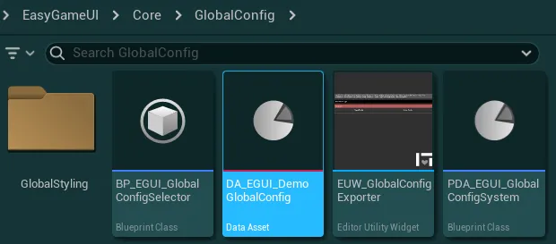
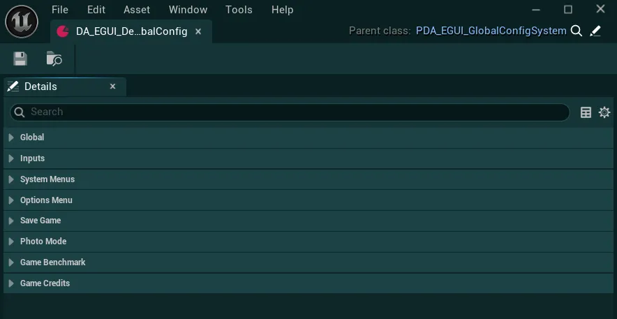
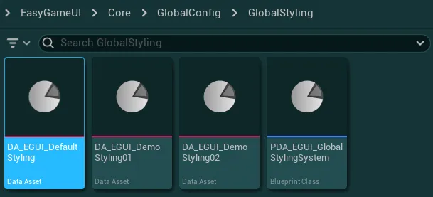
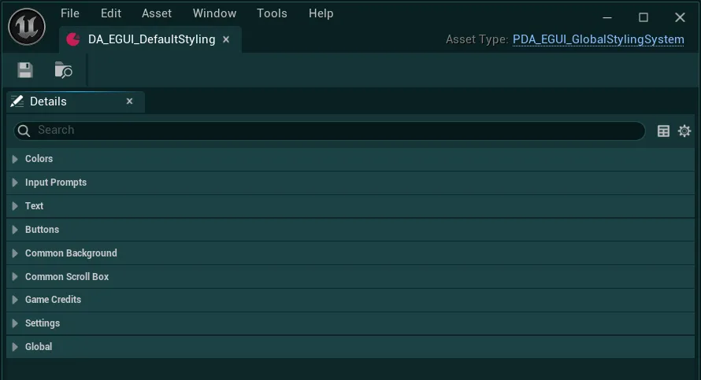
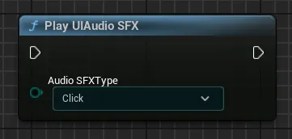

全局配置与样式系统¶
本资源包含一套全局配置与样式系统，可轻松配置任意系统的所有功能与视觉设置。
在文档中我会多次提到这些系统，因此请阅读以下细节，了解它们的工作方式和使用方法。
全局配置系统¶
全局配置数据资源（Global Config Data Asset）让你可以快速更改资源包正常工作所需的各项设置。 
系统使用的默认配置数据资源（DA_EGUI_DemoGlobalConfig）位于 EasyGameUI/Core/GlobalConfig 文件夹中

强烈建议你新建一个配置数据资源，或复制演示配置来设置自己的配置，详情请查看下方的下拉菜单。
如何创建新的配置数据资源
-
要创建新的配置数据资源，请在内容浏览器（Content Browser）窗口内任意位置右键单击，然后搜索“Data Asset”。
-
在出现的窗口中搜索
GlobalConfig，并选择PDA_EGUI_GlobalConfigSystem -
为这个新资源命名，然后只需选择该数据资源供系统使用即可（说明见下文）


如何选择系统使用的数据资源
-
要更改系统使用的数据资源，请进入
EasyGameUI/Core/GlobalConfig，并打开蓝图BP_EGUI_GlobalConfigSelector -
在此蓝图中，只需将
Global Config Data Asset变量的值改为你新建的数据资源 -
你的新数据资源现在已完全可以使用了！


如何在任意蓝图中获取全局配置变量
你可以使用 Get Global Config Data Asset 函数从全局配置中获取任意变量。该函数会返回系统使用的配置数据资源对象，让你可以访问其中的所有变量。

警告
此对象仅用于只读访问，请勿在游戏过程中尝试修改变量，否则很可能会导致意外结果。

在配置数据资源中，你可以看到许多用于控制资源包各方面的选项，它们被分为几个部分，我将在下面详细介绍。
请注意，部分设置目前未必全部适用，因为它们可能需要额外配置，相关内容将在文档的后续章节中说明。

全局类别
全局¶

-
Styling Data Asset将应用于所有控件的全局样式数据资源
-
Screenshots Capture Method定义应使用哪种方法捕获截图（拍照模式和存档缩略图）
仅在 UE5.5 中，发行构建必须使用
Render Target方法，因为引擎中的高分辨率截图捕获存在缺陷，会使其无法正常工作。这不影响其他任何 UE5 版本。
-
Disable Initialization Messages?如果为 True，资源的所有常规初始化消息都将被禁用（错误和警告仍会显示）
输入类别
输入¶

-
Gameplay Input Mapping Contexts所有可在游戏过程中激活、并在需要时由 UI 系统移除的输入映射上下文（Input Mapping Context）。
你还可以选择为该 IMC 定义优先级，如果Add Mapping Context on Game Load?为 True，系统将在加载时负责添加这个特定的 IMC。在此数组中，你应引用所有预计会在游戏过程中某个时刻使用的 IMC，即使它们不应默认添加（将布尔值设为 False）。
-
Apply Default Input Config On Begin Play?如果为 True，所定义的默认输入配置将在开始游戏时应用。
-
Default Input Config当系统中没有任何控件能够提供新的输入配置时，默认应用的输入配置。
此外，如果
Apply Default Input Config On Begin Play?为 True，也可以在开始游戏时强制应用该配置。
-
Hide Mouse Cursor When Using Keyboard?如果为 True，使用键盘导航 UI 系统时将隐藏鼠标光标。默认情况下，只有使用游戏手柄才能隐藏鼠标光标。
系统菜单类别
系统菜单¶

-
Play Intro Credits On Game Launch?如果为 True，且已在本配置的 Game Credits Contexts 中定义，系统将在游戏启动时加载制作人员名单上下文（Credits Context）
Intro Credits。
这可用于显示公司标志、警告等开场制作人员名单。
-
Intro Screen Widget主菜单关卡加载时立即显示的控件；若启用，它将负责播放开场制作人员名单，然后显示“按任意键”提示。如果此控件引用为空，系统将跳过该环节，直接显示主菜单。
-
Main Menu Widget开场界面关闭后（若已定义）作为主菜单显示的控件
关于切换系统控件类的说明
从系统切换控件时，理想情况下它们应是
WBP_EasyMasterWidget的子级，除非你确信自己所做修改的影响。更多细节请参阅 UI 导航系统章节
-
Pause Menu Widget从 HUD 调用“打开暂停菜单”函数时显示的控件
-
Main Menu Level主菜单关卡的引用，用于“返回主菜单”按钮以及退出基准测试系统/游戏制作人员名单。有关如何设置主菜单的更多细节，请参阅其专属章节。
-
New Game Level从主菜单点击“新游戏”按钮时将加载的关卡的引用
-
Pause Game In Pause Menu?如果为 True，进入暂停菜单时游戏将暂停
如果为 False，暂停菜单打开时游戏将实时运行
-
Display Game Version in Menus?是否应在暂停菜单和主菜单等菜单中显示“当前游戏版本”？
即使已禁用存档文件版本控制，此项也可设为 true
-
Current Game Version游戏的当前版本，可用于在 UI 上显示，或用于存档文件版本控制
选项菜单分类
选项菜单¶

-
Options Menu Widget从 HUD 调用“Open Options Menu”函数时显示的控件（默认用作暂停菜单/主菜单中的选项菜单）
-
Settings List所有设置管理器的列表，这些管理器应在 Begin Play 时初始化，之后可供选项菜单使用，或由任何其他系统全局使用
-
Keybinding Mapping Contexts该变量定义了一个输入映射上下文（Input Mapping Context）列表，其中包含所有可重新绑定的输入，并希望在按键重绑定系统中使用。有关如何设置这些输入映射上下文的更多细节，请参阅专门介绍选项菜单的章节。
当按映射上下文分组时，每个上下文关联的文本将用作分类名称
-
Keybinding Mappings Grouping Type定义按键绑定在选项菜单中的分组方式。
Group by Mapping Context将所有按键绑定归入上一个变量中定义的分类下Group by Input Category将按输入映射上下文中定义的按键Display Category对所有按键绑定进行分组，而不考虑其原本所属的映射上下文 请注意，按键冲突管理仅会处理同一映射上下文内的按键；若按输入分类分组，该系统仍会工作，但可能给用户带来一些困惑
-
Keybinding Mappings Conflict Method定义系统应如何处理按键绑定冲突
Conflicts by Input Mapping Context仅同一输入映射上下文内的按键才会冲突（不考虑显示分类）Conflicts by Category仅同一显示分类内的按键才会冲突（不考虑输入映射上下文）- 请注意，根据你的输入设置，这可能会在 IMC 内产生非预期行为，如适用可考虑使用“Conflicts All”Conflicts All所有按键都会被纳入冲突检测（不考虑分类或 IMC），这意味着在所有可用按键映射之间完全不允许冲突
-
Graphic Preset To Apply On First Game Launch如果你希望在游戏首次启动时强制应用某个画质预设，请将此值设置为高于
-1的任意值-1= 无/引擎默认；0= 低；1= 中；2= 高；3= 极高通常，引擎会默认使用极高预设，修改此项有助于确保所有硬件在启动时即获得良好体验
-
Game Audio Classes游戏用于对各类声音进行分组的音频分类。此处定义的分类将由其各自的“key”（Master、UI、Music 等）对应的音量由选项菜单控制。
如果你没有这些相应的音频分类，可以使用演示配置数据资源中所列资源包提供的分类。
有关音频分类设置的更多细节，请参阅专门介绍选项菜单的章节。
-
Toggles-
Tabs With Hidden Background选项菜单中应使用透明背景的标签页。
这有助于让玩家在后台看到渲染的世界，同时进行画质设置等更改。
-
Use High Compatibility Settings Saving?若为 True，设置将以标准 Unreal 存档文件而非 JSON 文件的形式保存到磁盘，代价是不再保持人类可读。
在某些无法正确支持存储 JSON 文件的平台（如主机）上，这可能是必需的。
-
Enable VSync Input Lag Mitigation?启用后，游戏会尝试通过将帧率限制在垂直同步阈值以下，来尽量减小垂直同步可能导致的输入延迟。结果可能因显示器配置而异。
此输入延迟缓解仅在玩家启用垂直同步时生效。
-
存档分类
存档¶

-
Save Operations Allowed?若为 False，所有存档操作都将被阻止，只能通过代码或存档触发器手动触发存档
暂停菜单也将不再显示存档游戏按钮
-
Load Operations Allowed?若为 False，所有读取存档操作都将被阻止，只能通过代码手动触发读取
暂停菜单和主菜单也将不再显示读取游戏按钮
提示
你可以在游戏过程中的任意时刻，通过从 Game Instance 调用 Set Save Game Operations Allowed 函数来更新这两个变量

-
Save Manager Widget作为存档管理器显示的控件，用于创建新存档或读取现有存档
-
Operations Manager Init Delay此延迟定义存档管理器在加载关卡时（若可用）启动初始读取操作前应等待多久
建议设置较小到中等程度的延迟，以确保在执行任何操作前世界和所有 Actor 都已正确加载。如果你希望确保读取开始时所有系统都已就绪，可以增大此延迟
-
Save Player Tranform?若为 True，玩家的变换（位置、旋转、缩放）将被自动保存，并在读取时针对每个持久关卡恢复。
启用此项后，你不应在玩家角色或玩家控制器中的任何 Save Game Component 上将
Save Transform变量设为 True。
-
Capture Thumbnail For Saves?若为 true，存档系统将为每个存档文件截取一张缩略图。
请注意，由于 Unreal 处理这些截图的方式，截取缩略图可能会在存档过程开始时造成轻微卡顿
-
Enable Save Files Versioning?若为 true，存档文件将与当前游戏版本关联（当前游戏版本必须为有效值）。若尝试用未列在“Compatible Game Versions”中的其他游戏版本加载这些存档，会向玩家显示一条警告信息
-
Compatible Game Versions若启用了存档版本管理，你可以在此定义与当前游戏版本不同但相互兼容的任意游戏版本，使用这些版本加载存档时不会显示任何警告信息
-
Loading Screen-
Loading Screen Hide Delay存档完全加载完成后，加载画面需要等待多久才隐藏
-
Loading Screen Backgrounds在加载画面背景中随机显示的图片
-
Loading Screen Tips在加载画面上随机显示的提示。留空则不显示任何提示
-
-
Auto Saves-
Enable Auto Saves?若为 True，则对所有未被禁用的关卡启用自动存档
-
Auto Saves Interval两次自动存档之间的间隔时间（秒）
-
Trigger Auto Save On Game Quit?若为 true，当用户从暂停菜单退回主菜单或完全退出游戏时，将触发一次自动存档
-
Max Slots For Auto Saves定义自动存档在覆盖较旧的自动存档之前可以创建多少个槽位（即自动存档总共可使用的槽位数）
-
Disallowed Levels For Auto Saves如果想在特定地图（例如主菜单）上禁用自动存档，可以在此数组中引用这些地图
-
-
Slow Batch Size/Medium Batch Size/Expensive Batch Size每个变量定义在单帧内，针对特定的存档或读档操作允许处理多少个 Actor
- 慢速操作指自动存档与重要存档（触发器/检查点）
- 中速操作指快速存档
- 高开销操作指手动存档以及所有读档
更多细节请参见专门介绍存档系统的章节
拍照模式分类
拍照模式¶

-
Enable Photo Mode in Game?若为 True，拍照模式系统在游戏中启用，玩家在允许时可以打开。若为 False，拍照模式在游戏中完全禁用
-
Photo Mode Widget打开拍照模式时显示的控件
-
Photo Gallery Widget从拍照模式中请求相册时显示的控件
-
Pause Game for Photo Mode?若为 True，进入拍照模式时游戏将暂停。若为 False，拍照模式打开期间游戏会实时运行
-
Capture Thumbnail若为 True，在拍照模式中拍摄主照片的同时还会捕获一张缩略图
缩略图用于在相册中更高效地显示截图，无需预先加载完整分辨率的图片
-
Max Camera Range相机可以离开其原始位置的最大范围（以 Unreal 单位——厘米为单位）。
小于 0 的值将禁用最大范围，允许无限范围
-
Screenshot Directory Type定义系统保存截图的位置
Default Engine Screenshot Location会将截图保存到[Project Folder]/Saved/Screenshots/[OSType]/下。对于打包版本，路径相同，但“Project Folder”位于 Windows 系统的[User]/Appdata/Local文件夹中Save In Document Folder会将截图保存到[User]/Documents/My Games/[Project Name]/下
游戏基准测试分类
游戏基准测试¶

-
Enable Game Benchmarking Tool?是否应启用游戏基准测试工具，并使其可在选项菜单中访问？
在启用此功能之前，请确保已按照选项菜单章节中关于游戏基准测试的说明正确完成设置
-
Enable Game Benchmarking Tool in Shipping Build?如果游戏基准测试工具已启用，是否也应在 Shipping 构建（面向玩家）中启用？
-
Game Benchmarking Level包含游戏基准测试设置的关卡引用，具体设置如该功能专属章节所述
-
Use Dedicated Input for Game Benchmark?若为 False，游戏基准测试按钮将作为一项设置显示在选项菜单的“图形设置”标签页中。若为 True，游戏基准测试按钮将拥有独立的输入项，并作为独立按钮显示在选项菜单的页脚中
游戏制作人员名单分类
游戏制作人员名单¶

-
Display Game Credits Button in Menus?若为 True，可通过
MenusCredits Context 在主菜单/暂停菜单中访问制作人员名单。若为 False，菜单中用于触发制作人员名单的按钮将被隐藏
-
Game Credits Widget通过菜单或游戏内请求显示制作人员名单时所用的控件
-
Game Credits Contexts一组上下文，可根据不同场景用于触发游戏制作人员名单。默认情况下，暂停菜单/主菜单会使用
Menus和Intro Credits这两个上下文。有关如何设置游戏制作人员名单的更多细节，请参阅其专属章节
全局样式系统¶
全局样式数据资源（Global Styling Data Asset）可让您快速自定义资源包中所有控件的大量视觉元素。 
要更改这些样式，请前往 EasyGameUI/Core/GlobalConfig/GlobalStyling 文件夹。在这里，您可以找到默认使用的样式数据资源（DA_EGUI_DefaultStyling），以及其他用于演示的预设。

如何选择系统所使用的样式数据资源
- 要选择系统使用的样式数据资源，请打开您的全局配置数据资源（如果您使用的是演示版本，则打开
EasyGameUI/Core/GlobalConfig文件夹中的演示资源） -
然后，在
Global分类中，直接在Styling Data Asset变量中更换数据资源即可 -
重新编译任意蓝图，使更改生效


打开样式数据资源后，您会看到许多用于控制各类样式元素的选项，它们被划分为几个分类，我将在下面逐一详细说明。

注意
要让更改生效并在编辑器中的控件上可见，您可能需要触发资源包中任意控件或蓝图的编译

输入提示分类
输入提示¶

-
Input Prompt Icon Color应用于所有使用输入提示控件的输入提示的颜色
-
Input Prompt Overlay Material可用于为输入提示设计样式的叠加材质
您可以查看
M_InputPrompts_DemoOverlay以了解叠加材质的示例
-
Input Prompt Overlay Material Parameter Name叠加材质中定义的基础纹理的参数名称
文本分类
文本¶

-
Primary Text ColorCommon Text（资源包中的所有文本）默认使用的颜色
-
Inverted Text Color在可能与主文本颜色相同的背景（例如按钮）上需要时使用的颜色
可以在任意 Common Text 控件上使用
Switch Text Color函数来反转颜色
-
Fonts字体相关的所有设置，使用 5 个预设：Regular、Medium、Bold、Black 和 Light。每个预设都可以选择一种字体及其斜体变体，并可控制字体使用的阴影。
所有使用 Common Text 的控件，其配置中都会有选项用于控制使用哪种字体以及字体大小

按钮分类
按钮¶

-
Use Global Rounding Parameter For Buttons?若为 True，所有按钮样式都会被覆盖，统一使用样式设置中定义的全局圆角半径和圆角类型值
若为 False，每个按钮样式将完全自行负责设置其自身样式，包括圆角参数
-
Buttons Globa lRounding Corner Radii启用全局圆角参数时，应用于所有按钮的圆角半径
-
Buttons Global Rounding Type当
Use Global Rounding Parameter For Buttons?为 True 时，应用于所有按钮的圆角类型
-
Common Button StylesCommon Button 控件根据控件中所选的样式而使用的标准按钮样式列表
所有 Common Button 控件的配置中都会有选项用于控制按钮使用的样式

-
Selector Arrow Texture用于通用选择器按钮控件上的箭头图像。为获得最佳效果，纹理必须为正方形且箭头朝左。该图像可在所有设置选择器中以及图库内看到

-
Use Accent Color on Selector Arrow?若为 true，选择器箭头纹理将使用强调色，此时纹理必须为白色，颜色才能正确应用。若为 false，将保留纹理自身的颜色
通用背景分类
通用背景¶

Common Background Styles 变量包含一个标准边框样式列表，Common Background 控件根据控件中所选的样式使用对应的样式。
Normal Style 选择器是默认可见的样式，而 Active Style 选择器可通过在任意 Common Background 控件上调用 Set Background Active 函数来显示

Corner Rounding Type 定义该特定背景应使用哪种圆角类型，不受样式中设置的内容影响
通用滚动框类别
通用滚动框¶

这两个设置都用于为通用滚动框（Common Scroll Box）控件应用样式
-
Common Scroll Box Style虚幻中滚动框的标准样式定义
-
Common Scroll Bar Style滚动条的标准样式定义
注意：滚动条的“滑块”（即可选中部分）始终使用强调色，与此处设置的样式颜色无关
游戏制作人员名单类别
游戏制作人员名单样式设置¶

-
Section Title Style所有分区标题文本默认使用的文本样式（字体、字号、颜色、内边距）
-
Text Section Role Style默认用于显示角色名称的文本样式（字体、字号、颜色、内边距）
-
Text Section Names Style默认用于显示成员姓名的文本样式（字体、字号、颜色、内边距）
-
Text Section Outer Margin角色与姓名文本四周的外边距，用于将它们与分区标题和/或任何图片分区隔开
设置类别
设置¶

-
Setting Layout Presets在不同场景中使用的预设，用于为设置控件应用基础样式规则。每个预设可定义多种参数，例如设置项的高度、使用的字体、重置按钮的样式等。
-
Settings Background Styles所有设置项所使用的背景的各种样式选项-
Setting Background Style设置项未处于聚焦/悬停状态时，用于整个设置项背景/边框的样式

-
Setting Background Active Style设置项处于聚焦或悬停状态时，用于整个设置项背景/边框的样式
-
Options Selectors Background Style用于设置项取值部分背景/边框的样式

-
-
Setting Button Styles-
Setting Toggle Buttons Style设置开关控件按钮应使用的按钮样式
-
Reset Setting Button Style每个设置项上的重置按钮应使用的按钮样式
-
-
Setting Slider汇总设置滑块控件的各种样式选项-
Slider Style应用于设置项中滑块部分的样式 -
Settings Spin Box Style控件中数值输入框（spinbox）所使用的样式 -
Use Inverted Text Color in Spin Box如果数值输入框内的文本应使用反转的文本颜色（例如你希望数值输入框使用浅色背景），请勾选此框
-


-
Setting Keybinding设置按键绑定控件中按键选择器的普通与激活样式
当用户聚焦某个按键选择器以更改按键绑定时，将使用激活样式
全局类别
全局¶

-
Game Logo在系统菜单（如主菜单、暂停菜单和开场画面）中显示的游戏 Logo
-
UI Audio SFX一组音效，会在系统的通用控件中播放（主要涉及按钮、设置项等）
这些音效也可以通过全局函数
Play UI Audio SFX从任意位置调用


-
Global Cursor Styling一组光标控件，可自动应用于鼠标光标的多种状态

-
Default Gamepad Keys Brand在可用的三种手柄按键类型中选择默认值。手柄按键品牌之后可在游戏过程中的选项菜单里修改
X= Xbox 手柄
P= Playstation 手柄
S= Nintendo Switch 手柄
配置导出工具¶
全局配置导出工具是一个实用工具，可帮助你以文本格式导出或导入资源包中的任意配置（Global Config 与 Global Styling）
如何使用配置导出工具
-
你可以在
EasyGameUI/Core/GlobalConfig文件夹中找到此工具，右键单击并选择Run Editor Utility Widget即可打开它 -
打开后，你将看到以下界面

-
在这里，你可以先选择要从哪种数据资源导出数据/向哪种数据资源导入数据：Global Config Data Asset 或 Global Styling Data Asset

-
在
Config Data Asset/Styling Data Asset字段内，选择目标数据资源
-
接下来，你可以通过以下步骤导出或导入数据
-
要导出数据，只需点击
Export Config按钮，随后会出现一段可复制的文本，其中包含该数据资源的全部信息
-
要导入数据，先将配置文本粘贴到灰色输入框中，然后点击
Import Config按钮
警告
导入配置会覆盖数据资源中先前存储的所有数据。请确保已选择正确的数据资源以及正确的类型。
如果配置文本与数据资源类型不匹配，则不会执行任何操作。
-